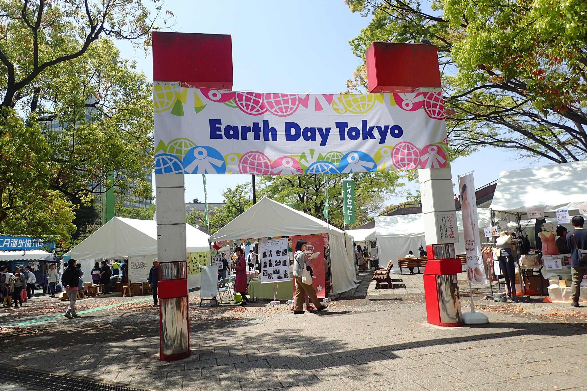

③アースデイについて

1970年アメリカのG・ネルソン上院議員が、４月22日を”地球の日”であると宣言、アースデイが誕生しました。
学生 運動・市民運動がさかんなこの時代に、アースデイを通して環境のかかえる問題に対して人々に関心をもってもらおうと、それは当時全米学生自治会長をしていたデニス・ヘイズ氏による、全米への呼びかけへとつながりました。
そうして、1970年の最初のアースデイは、延べ2000万人以上の人びとが何らかの形で、地球への関心を表現する アメリカ史上最大のユニークで多彩なイベントとなりました。